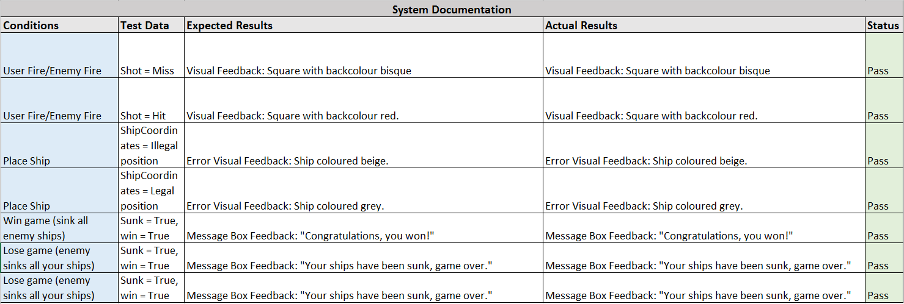

I started completing the system documentation. I chose to focus on a few core features, namely; firing, placing ships and winning. I am unsure what I should consider as the full scope of the system that system documentation covers however there are a few main logic paths I must cover: firing, wining/losing, sunk ships, placement of ship. The computer still feels a bit underpowered in its gameplay though.

Data Dictionary
Post by Jonah Smith, Mar 20, 2017.
When constructing the data dictionary, I found it difficult to identify the size of each control. However, Microsoft provides variable information of their Website for VB code which was invaluable.
Less Squares
Post by Jonah Smith, Mar 13, 2017.
It would seem logical that the quickest and most efficient way to win a game of battleships is to select squares on a certain diagonal. The smallest ship is two square and so even though only squares diagonally connected would be selected no ship would be missed. Consequently, the number of squares available Is halved. Following this logic, I implemented a small module which simply restricts the computers shots to squares on the same diagonal. To determine whether a square is a part of this set I simply drew up a grid. One can then see that squares of the diagonal I selected were limited to either both even x and y coordinates, or odd x and y coordinates. Consequently the module was simple in producing. When I ran an experimenting measuring the difference in times it wasn’t very significant however. This may have been due to my small sample size and number of repetitions however. My next task to document all the variables in a data dictionary now that I am confident I won’t be making any major changes.
User Guides
Post by Jonah Smith, Mar 06, 2017.
After much experimentation, I implemented the User Guide. Initially I attempted to use the adobe pdf control, however while being a good to not have to reinput information directly into VB, it doesn’t integrate very well into the project. Instead I used images on a new form in a picture box which the user can scroll through. I found this an effective method as any changes to the guide can be easily put back into the form, furthermore amount of code need to implement the guide Is minute. My next aim is to improve the computers success/win rate as I feel the user can still beat it a larger percentage of the time.